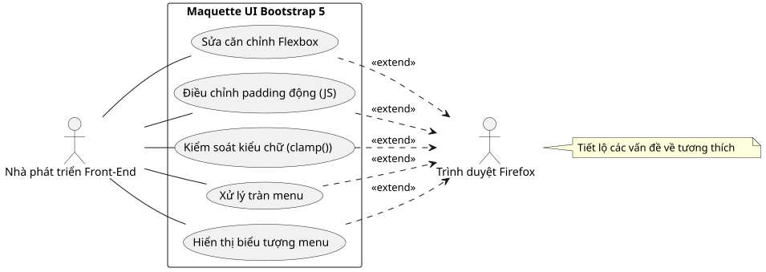
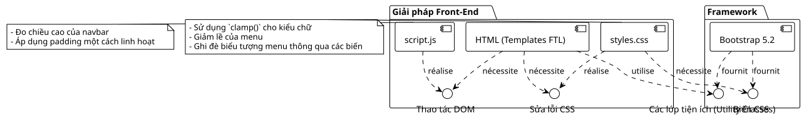
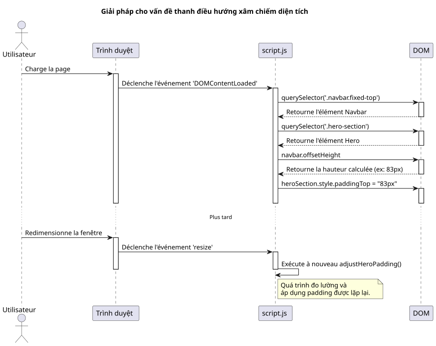
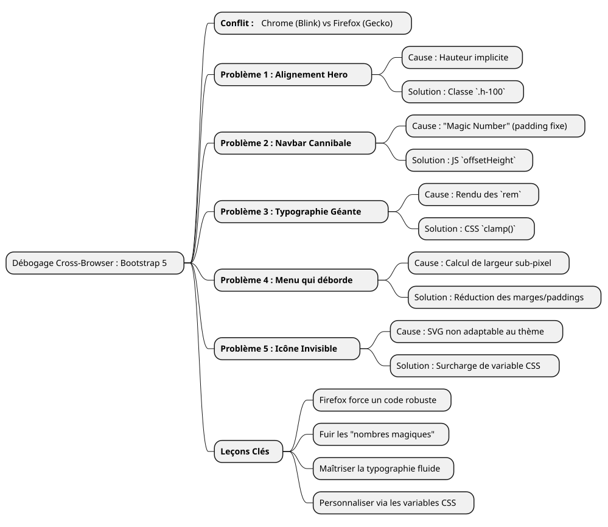

Câu chuyện gỡ lỗi: chế ngự những điều bất thường của Firefox với Bootstrap 5
Đăng ngày 14 July 2025
|
Thời gian đọc: khoảng 7 phút Trình độ: Trung cấp |
Trong trường hợp thực hành chi tiết này, chúng ta sẽ phân tích những vấn đề tương thích trình duyệt phổ biến nhất và đôi khi gây khó chịu nhất khi tạo mockup UI với Bootstrap 5.2. Từ việc quản lý Flexbox đến sự tinh tế trong việc hiển thị phông chữ, hãy cùng khám phá hành trình gỡ lỗi của chúng tôi để biến một thiết kế bị lỗi trên Firefox thành một trải nghiệm pixel-perfect trên tất cả các trình duyệt.
Chiến trường: một bản mô hình, ba trình duyệt, nhiều bản kết xuất
Bất kỳ nhà phát triển front-end nào cũng biết cảm giác này. Sau nhiều giờ làm việc, bản thiết kế cuối cùng cũng trở nên hoàn hảo. Các căn chỉnh đều sắc nét, kiểu chữ thanh lịch, các hiệu ứng chuyển động mượt mà. Ta thở phào mãn nguyện, chiêm ngưỡng thành quả của mình trên Chrome (hoặc Brave, hoặc Edge), rồi để cho chắc chắn, ta mở dự án trên Firefox. Và chính lúc đó, bi kịch xảy ra. Các thành phần bị tràn, căn chỉnh bị phá vỡ, kích thước phông chữ hỗn loạn… sự hài hòa tuyệt đẹp đã tan biến.
Đây chính xác là kịch bản mà chúng tôi đã đối mặt khi phát triển một giao diện portfolio mới. Bản yêu cầu kỹ thuật rất đơn giản: một trang chủ hiện đại, responsive, với bộ chọn chủ đề (sáng, tối và độ tương phản cao), sử dụng vanilla JavaScript và phiên bản mới nhất của Bootstrap 5.2.
Bài viết này không phải là một danh sách các giải pháp kỳ diệu. Đây là nhật ký ghi chép lại phiên gỡ lỗi của chúng tôi, một cuộc tìm hiểu sâu vào lý do "tại sao" có sự khác biệt về hiển thị giữa các engine Blink (Chromium, Brave) và Gecko (Firefox), đồng thời là minh chứng cho thấy những giải pháp hiện đại và bền vững luôn tốt hơn những bản vá tạm thời vội vã.


Vấn đề 1: Thẻ bay của phần "Hero
Lỗi đầu tiên cũng là lỗi dễ thấy nhất. Phần chào mừng ("hero") bao gồm hai cột: bên trái là tiêu đề chính; bên phải là một thẻ giới thiệu.
-
Triệu chứng:Trên Chrome và Brave, hai cột được căn giữa theo chiều dọc một cách hoàn hảo. Trên Firefox, thẻ bên phải bị rơi xuống dưới văn bản bên trái một cách khó hiểu.
-
Cuộc điều tra:Mã HTML dường như đơn giản và chính xác, sử dụng các lớp tiêu chuẩn của Bootstrap.
<section id="home" class="hero-section">
<div class="container">
<!-- Cette ligne est la clé du problème -->
<div class="row align-items-center min-vh-100">
<div class="col-lg-6">
<!-- Contenu de gauche -->
</div>
<div class="col-lg-6">
<!-- Carte de droite -->
</div>
</div>
</div>
</section>CSS tùy chỉnh của chúng tôi cho`.hero-section`đã định nghĩa`display: flex` et align-items: center, và lớp`min-vh-100`đã thiết lập một chiều cao tối thiểu cho dòng (div.row). Vậy thì, tại sao Firefox lại từ chối căn giữa các cột?
-
Nguyên nhân sâu xa:Đây là một trường hợp điển hình về cách các công cụ render diễn giải các chiều cao ngầm định. La`<section>`có một`min-height`, nhưng không có`height`rõ ràng. Để áp dụng`align-items-center`bên trong`div.row`, Firefox cần biết chiều cao tham chiếu của vùng chứa này. Vì các phần tử cha của nó (
div.containeret la `<section>`chính nó) không có chiều caonghiêm ngặt, Firefox đã thất bại. Công cụ Blink, cởi mở hơn, có thể "đoán" được ý định và căn giữa các phần tử. Gecko, tuân thủ đặc tả chặt chẽ hơn, thì không làm vậy. -
Giải pháp:Đặt chiều cao một cách tường minh. Chúng tôi đã bắt buộc`.container` et le `.row`chiếm 100% chiều cao của phần tử cha tương ứng bằng cách sử dụng lớp tiện ích`h-100`của Bootstrap.
<section id="home" class="hero-section">
<div class="container h-100">
<div class="row align-items-center min-vh-100 h-100">
<!-- ... -->
</div>
</div>
</section>|
Khi một`align-items`Flexbox không hoạt động như mong đợi trên trục dọc, hãy luôn kiểm tra xem vùng chứa có chiều cao ( |
Vấn đề 2: Thanh điều hướng cannibalize
Một khi phần "Hero" đã được căn chỉnh, một vấn đề khác đã xuất hiện: thanh điều hướng, với lớp của nó`fixed-top`, chồng lên tiêu đề. Một`padding-top: 80px`đã được áp dụng cho phần "Hero" như một giải pháp.
-
Triệu chứng: Le `padding`là đã đủ trên Chrome, nhưng không phải trên Firefox, nơi tiêu đề vẫn bị che khuất một phần.
-
Nguyên nhân sâu xa:Việc sử dụng một "số ma thuật" (
80px) là là một thực hành rất tệ. Chiều cao của một phần tử như thanh điều hướng có thể thay đổi vài pixel giữa các trình duyệt khác nhau do những khác biệt nhỏ trong việc hiển thị phông chữ, khoảng cách, hoặc thậm chí là các tùy chọn của người dùng. Việc dựa vào một giá trị cố định là công thức dẫn đến một thiết kế mong manh. -
Giải pháp:Một giải pháp linh hoạt và chuẩn xác bằng JavaScript. Chúng tôi đã viết một tập lệnh nhỏ để:
-
Đo chiều cao thực tế của thanh điều hướng sau khi trang được render.
-
Áp dụng chiều cao đã đo này như là`padding-top`đến phần "Hero".
-
Chạy lại hàm này mỗi khi thay đổi kích thước cửa sổ để thích ứng với các thay đổi (như khi chuyển sang menu hamburger).
document.addEventListener('DOMContentLoaded', function() {
function adjustHeroPadding() {
const navbar = document.querySelector('.navbar.fixed-top');
const heroSection = document.querySelector('.hero-section');
if (navbar && heroSection) {
const navbarHeight = navbar.offsetHeight;
heroSection.style.paddingTop = navbarHeight + 'px';
}
}
// Ajuster au chargement et au redimensionnement
adjustHeroPadding();
window.addEventListener('resize', adjustHeroPadding);
});
Song song đó, tất nhiên chúng tôi đã xóa quy tắc`padding-top: 80px;`của tệp chúng tôi`styles.css`Vui lòng cung cấp văn bản cần dịch.
Vấn đề 3: Kiểu chữ hỗn loạn
Vấn đề sau đây gây hại nhất cho hình ảnh thương hiệu: kích thước của tiêu đề chính.
-
Triệu chứng:Trên Firefox, phông chữ của tiêu đề "Développeur Formateur…" cực kỳ lớn, gần như gây sốc, trong khi nó lại hài hòa trên các trình duyệt khác.
-
Nguyên nhân sâu xa:Tiêu đề đã sử dụng một lớp`display-4`của Bootstrap. Các lớp này sử dụng kích thước phông chữ đáp ứng, thường dựa trên đơn vị`rem`và các media queries. Một lần nữa, thuật toán kết xuất của Firefox, kết hợp với phông chữ "Inter", đã dẫn đến việc tính toán kích thước lớn hơn nhiều trên độ phân giải 1920x1080 của chúng tôi.
-
Giải pháp:Kiểm soát lại với hàm CSS`clamp()
. Hàm này là một cuộc cách mạng cho kiểu chữ linh hoạt. Nó cho phép định nghĩa kích thước phông chữ với ba giá trị: một kích thước tối thiểu, một kích thước "ưu tiên" (tự điều chỉnh theo chiều rộng của khung nhìn,`vw), và một kích thước tối đa.
.hero-content h1 {
color: var(--text-primary);
line-height: 1.2;
/*
Min: 2rem
Préférée: s'adapte à la vue
Max: 2.5rem (40px)
*/
font-size: clamp(2rem, 1.2rem + 1.5vw, 2.5rem);
}Với`clamp(), chúng ta có thể yêu cầu trình duyệt: "Hãy tăng kích thước phông chữ theo màn hình, nhưng không vượt quákhông bao giờgiới hạn của`2.5rem. Điều này đã ngay lập tức đồng nhất hóa việc hiển thị trên tất cả các trình duyệt, mang lại cho chúng tôi quyền kiểm soát tuyệt đối đối với tính thẩm mỹ cuối cùng.
Vấn đề 4: Thanh điều hướng bị tràn
Đây là vấn đề khiến chúng tôi đau đầu nhất và cuối cùng đã hé lộ bản chất sâu xa của những khác biệt nhỏ trong việc kết xuất.
-
Triệu chứng:Trên màn hình 1920x1080, các liên kết cuối cùng của menu ("Blog", "Contact") bị đẩy ra khỏi màn hình về phía bên phải, nhưng chỉ xảy ra trên Firefox.
-
Nguyên nhân sâu xa:Sau nhiều nỗ lực không thành công (thay đổi các breakpoint của Bootstrap từ`lg` à
xl`sau đó`xxl), chúng tôi đã hiểu. Nguyên nhân không phải do logic của Bootstrap, mà chỉ là một phép tính chiều rộng đơn giản. Trên Firefox, tổng chiều rộng của tất cả các liên kết, bao gồm cả`padding` et `margin`đến mức cận điểm ảnh (sub-pixel), đã hơi lớn hơn 1920 pixel. Trên Chrome, tổng số này lại hơi thấp hơn. Chúng tôi đã thiếu một vài pixel. -
Giải pháp:Một đợt cắt giảm khoảng cách bằng "phẫu thuật". Vì không thể nhắm mục tiêu riêng cho Firefox bằng các "hacks" CSS lỗi thời, giải pháp sạch duy nhất là tìm một kiểu chung hoạt động trên mọi trình duyệt. Vì vậy, chúng tôi đã giảm nhẹ margin và padding ngang của mỗi liên kết điều hướng.
/* La version finale, légèrement plus compacte */
.navbar-nav .nav-link {
font-size: 0.9rem; /* 90% de la taille de base */
color: var(--text-primary) !important;
font-weight: 500;
margin: 0 0.2rem;
padding: 0.5rem 0.5rem !important;
border-radius: 0.375rem;
transition: all 0.3s ease;
}Sự giảm bớt này, gần như không thể nhìn thấy bằng mắt thường trên một phần tử duy nhất, đã giúp chúng ta tiết kiệm được tổng cộng khoảng trống cần thiết để tất cả các liên kết nằm gọn trong khung hình trên Firefox, trong khi vẫn duy trì giao diện gần như không đổi trên các trình duyệt khác.
Vấn đề 5: Menu hamburger bị ẩn
Vấn đề cuối cùng, và cũng không kém phần quan trọng, liên quan đến khả năng truy cập trên thiết bị di động.
-
Triệu chứng:Ở chế độ responsive (menu "hamburger"), biểu tượng menu đã bị ẩn trên các chủ đề "dark" và "high-contrast".
-
Nguyên nhân sâu xa:Biểu tượng menu của Bootstrap 5 là một`background-image`(một SVG được mã hóa URL). Theo mặc định, màu đường viền của nó là màu tối, được tối ưu hóa cho nền sáng. Nó không tự động thích ứng với việc thay đổi chủ đề.
-
Giải pháp:Sử dụng các biến CSS của Bootstrap để ghi đè biểu tượng. Chúng tôi đã định nghĩa một biểu tượng SVG mới, nhưng lần này với một đường nét màu trắng (
#ffffff), và chúng tôi đã áp dụng nó cụ thể khi các chủ đề`dark` ou `high-contrast`đang hoạt động.
/* ======================
Fix pour l'icône du menu Burger (Blanc)
====================== */
[data-bs-theme="dark"] .navbar-toggler-icon,
[data-bs-theme="high-contrast"] .navbar-toggler-icon {
--bs-navbar-toggler-icon-bg: url("data:image/svg+xml,%3csvg xmlns='http://www.w3.org/2000/svg' viewBox='0 0 30 30'%3e%3cpath stroke='%23ffffff' stroke-linecap='round' stroke-miterlimit='10' stroke-width='2' d='M4 7h22M4 15h22M4 23h22'/%3e%3c/svg%3e");
}|
Việc tùy chỉnh các thành phần của Bootstrap như thế này ngày càng được thực hiện thông qua việc ghi đè các biến CSS ( |
Kết luận: những bài học từ một quá trình gỡ lỗi kiên cường
Hành trình này, dù đôi khi gây nản lòng, nhưng lại mang lại nhiều bài học quý giá. Mỗi vấn đề được giải quyết đều củng cố một sự thật cơ bản của phát triển web:không gì thay thế được một quy trình kiểm thử đa trình duyệt nghiêm ngặtVui lòng cung cấp văn bản tiếng Pháp cần dịch.

Dưới đây là những bài học mà chúng tôi rút ra được:
-
Firefox là một đồng minh:Sự tuân thủ nghiêm ngặt hơn đối với các tiêu chuẩn CSS buộc chúng ta phải viết mã nguồn mạnh mẽ hơn và ít gây nhầm lẫn hơn.
-
Hãy tránh các "nombres magiques" :Các giá trị cố định (như`padding-top: 80px`) là những quả bom hẹn giờ. Hãy luôn ưu tiên các giải pháp động (JavaScript) hoặc tương đối (Flexbox, Grid).
-
Làm chủ kiểu chữ của bạn:Sử dụng`clamp()`để kiểm soát toàn diện kích thước phông chữ phản hồi.
-
Hãy nghĩ theo hướng "components":Để tùy chỉnh Bootstrap, hãy ghi đè các biến CSS của nó thay vì tăng số lượng các quy tắc ghi đè lên framework.
-
Đừng nhắm mục tiêu vào một trình duyệt:Giải pháp gần như không bao giờ là thực hiện một bản "hack" cho một trình duyệt cụ thể, mà là tìm một kiểu style chung hoạt động được ở mọi nơi.
Cuối cùng, bản mẫu hiện đã vững chắc, có thể dự đoán được và sẵn sàng để tích hợp vào một hệ thống templating. Mỗi lỗi được khắc phục không phải là một thất bại, mà là một bước tiến tới một mã nguồn chất lượng hơn.